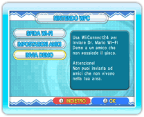
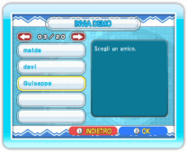
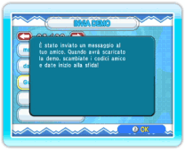
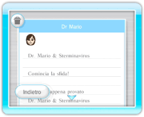

20 |
Inviare la versione demo (Dr. Mario) |
 |
Puoi inviare una demo del gioco agli amici che non hanno acquistato il gioco Dr. Mario & Sterminavirus. Prima di inviare la demo, assicurati che WiiConnect24 sia impostato correttamente (vedi Usare WiiConnect24). Nota: la demo può essere usata solo per disputare sfide online contro giocatori che hanno la versione integrale del gioco. Se entrambi i giocatori hanno una versione demo, sarà impossibile giocare. Per inviare la demo, dovrai disporre del tuo codice amico. Puoi controllare il tuo codice amico selezionando NINTENDO WFC dallo schermo di selezione della modalità, poi IMPOSTAZIONI AMICI e infine CONTROLLA CODICE AMICO. ● Inviare la demo 
Dallo schermo di selezione della modalità, seleziona NINTENDO WFC per visualizzare lo schermo del menu Nintendo WFC, quindi seleziona INVIA DEMO. 
Quando appare la tua rubrica Wii, scegli l’amico Wii al quale vuoi inviare la demo e poi scegli SÌ per confermare. 
Una volta inviata la demo, verrà visualizzato a schermo un messaggio di conferma. Nota: non puoi inviarla ad amici che non vivono nella tua area, o agli amici Wii che hanno un codice Wii. 
● Ricevere la demo Una volta spedita la demo, il tuo amico riceverà un messaggio nella bacheca Wii. Dopo aver letto il messaggio, il tuo amico può scegliere di iniziare la procedura di download. Una volta terminato il download, il tuo amico deve ottenere un codice amico dal gioco e, successivamente, dovrete registrare i rispettivi codici amico (vedi Impostazioni amici). Per sfidare il tuo amico, seleziona NINTENDO WFC dallo schermo del menu di Dr. Mario per visualizzare lo schermo del menu della Nintendo WFC. Da qui, seleziona SFIDA Wi-Fi e poi INVITA UN AMICO e seleziona l’amico che vuoi sfidare. Nota: solo il giocatore che dispone della versione originale di Dr. Mario & Sterminavirus può scegliere di invitare un amico. Le impostazioni e i risultati non verranno salvati. |
 |
 |